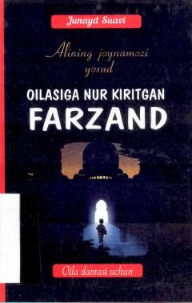

AJ10 yoshli Alining ezgulik va sabr haqidagi ibratli qissasi.
Bu qissa 10 yoshli Ali ismli bolaning hayotidan olingan voqealarni hikoya qiladi. Asarda inson doimo ezgulikka intilishi va qiyinchiliklarni sabr hamda to'g'ri tadbir bilan yengishi lozimligi bolaning boshidan kechirgan voqealar orqali tasvirlanadi. Kitob oila davrasi uchun mo'ljallangan bo'lib, turkiyalik muallif Junayd Suavining asari Umida Adizova tomonidan tarjima qilingan.